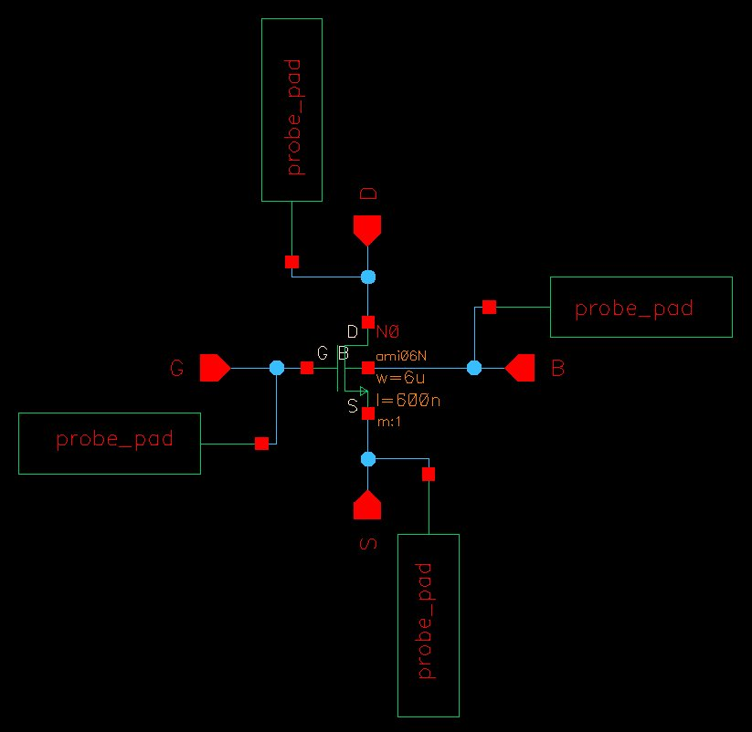
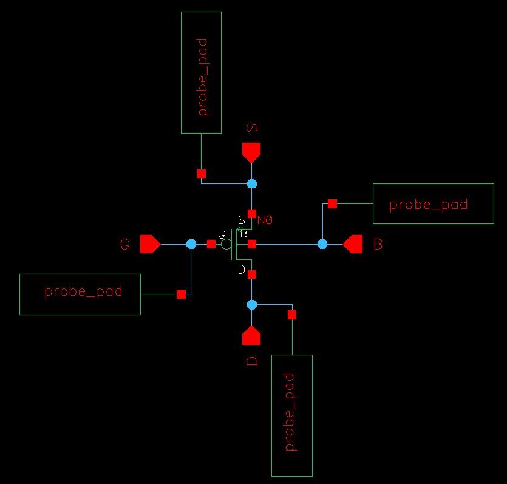
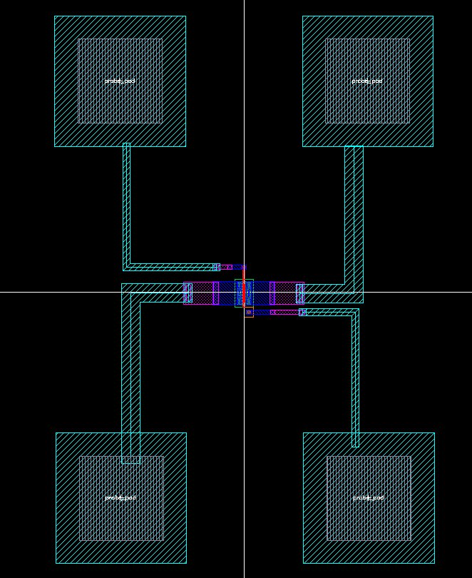
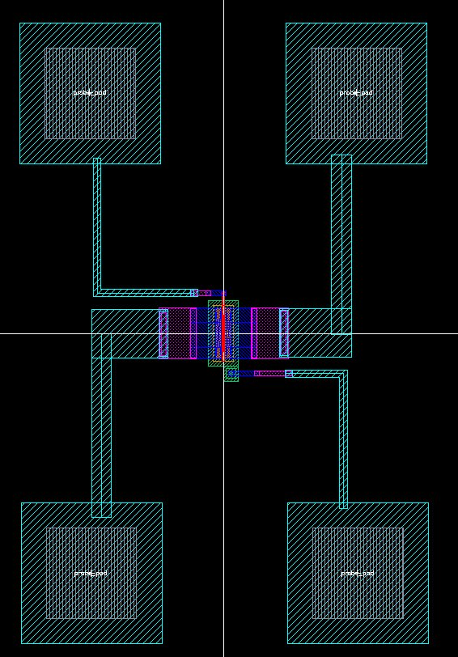
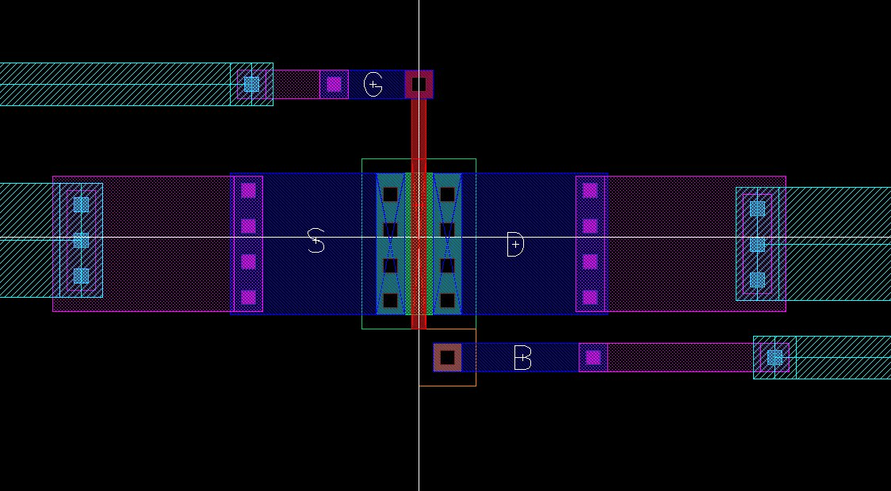
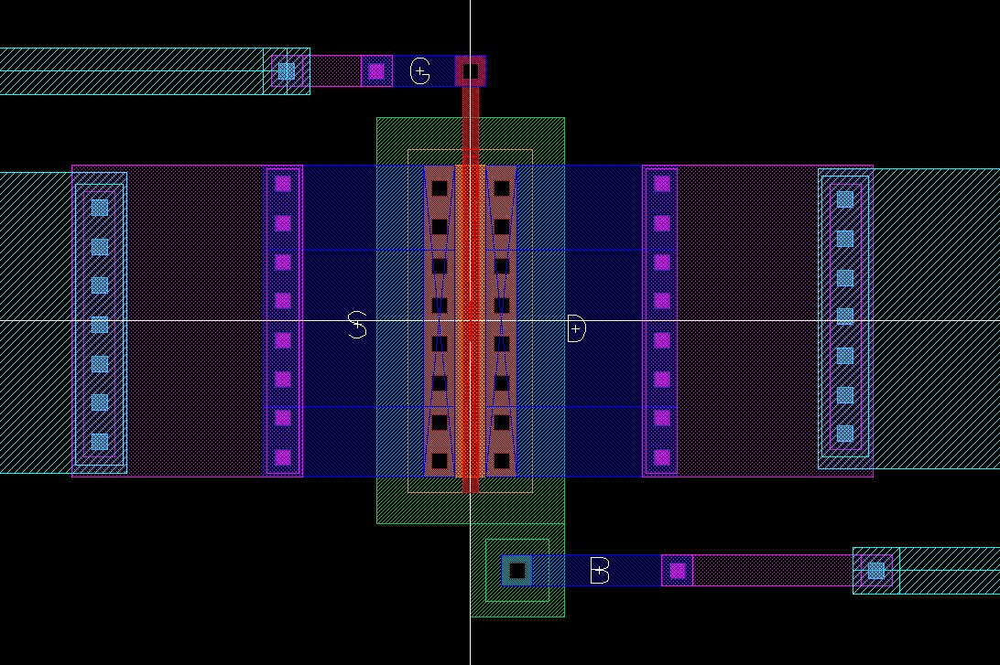
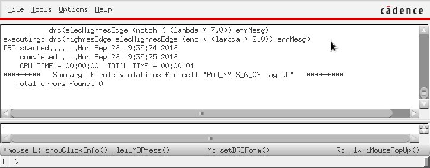
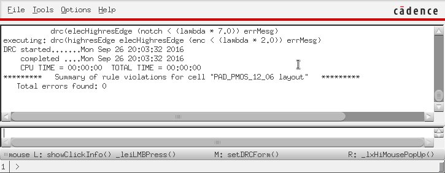
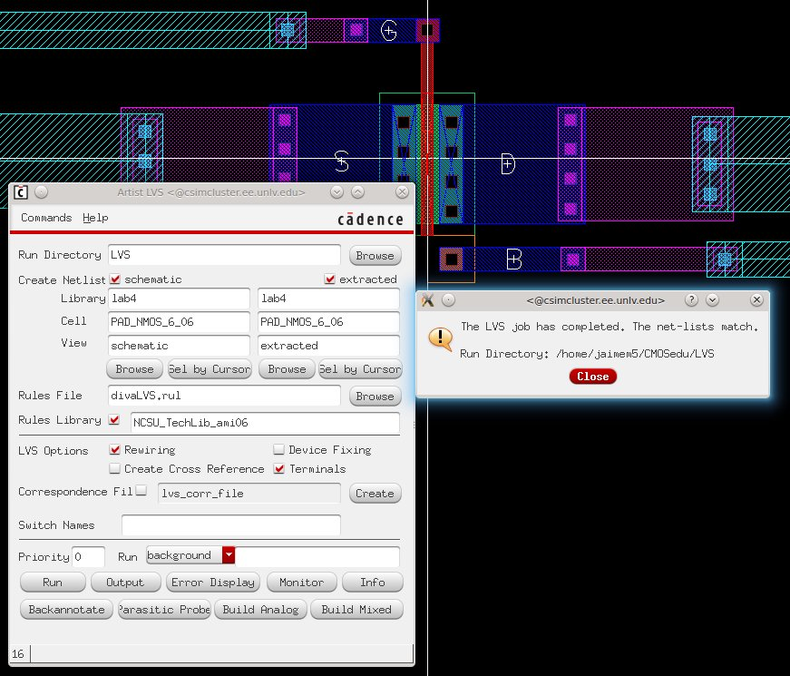
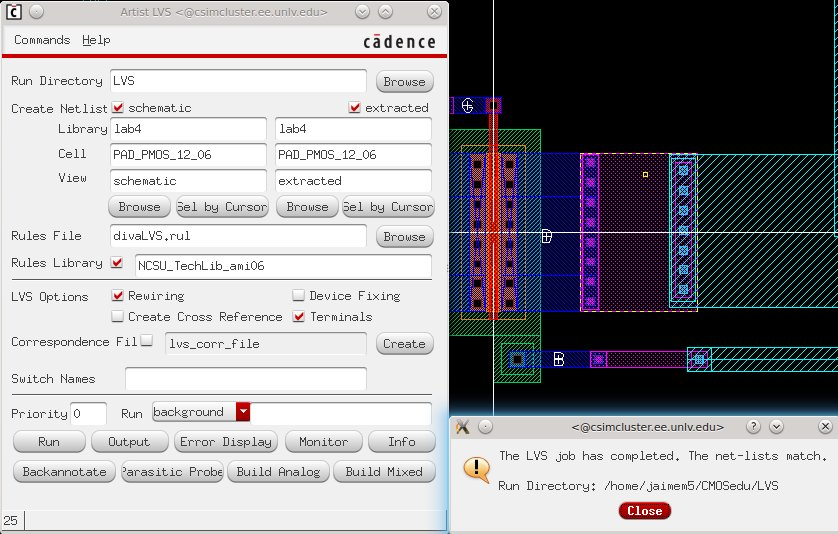

Lab 4 - EE 421L
Authored
by Martin Jaime,
email: jaimem5 at the UNLV students domain
Date September 28th, 2016
Pre-lab work:
- Back-up all of your work from the lab and the course.
- Read through this lab before starting it.
- Go through Tutorial 2 seen here.
- In
the simulations in this lab the body of all NMOS devices (the
substrate) should be at ground (gnd!) and the body of all PMOS devices
(the n-well) should be at a vdd! of 5V.
Lab Report
- Generate 4 schematics and simulations (see the examples in the Ch6_IC61 library, but note that for the PMOS body should be at vdd! instead of gnd!):
- A schematic for simulating ID
v. VDS of an NMOS device for VGS varying from 0 to 5 V in 1 V steps
while VDS varies from 0 to 5 V in 1 mV steps. Use a 6u/600n
width-to-length ratio.
- A
schematic for simulating ID v. VGS of an NMOS device for VDS = 100 mV
where VGS varies from 0 to 2 V in 1 mV steps. Again use a 6u/600n
width-to-length ratio.
- A
schematic for simulating ID v. VSD (note VSD not VDS) of a PMOS device
for VSG (not VGS) varying from 0 to 5 V in 1 V steps while VSD varies
from 0 to 5 V in 1 mV steps. Use a 12u/600n width-to-length ratio.
- A
schematic for simulating ID v. VSG of a PMOS device for VSD = 100 mV
where VSG varies from 0 to 2 V in 1 mV steps. Again, use a 12u/600n
width-to-length ratio.
- Lay
out a 6u/0.6u NMOS device and connect all 4 MOSFET terminals to probe
pads.
- Show your layout passes DRCs.
- Make a corresponding schematic so you can LVS your layout.
|
- Lay out a 12u/0.6u PMOS device and connect all 4 MOSFET terminals to probe pads.
- Show your layout passes DRCs.
- Make a corresponding schematic so you can LVS your layout
|

|

|

|

|

|

|

|

|

|

|
EE421L Lab Student Listing | My Lab Directory | EE421 Home Page